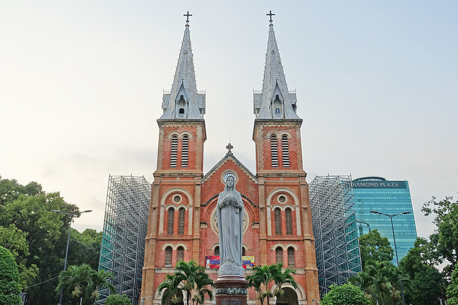
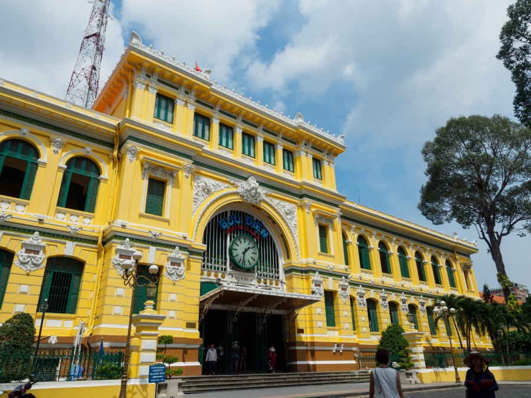
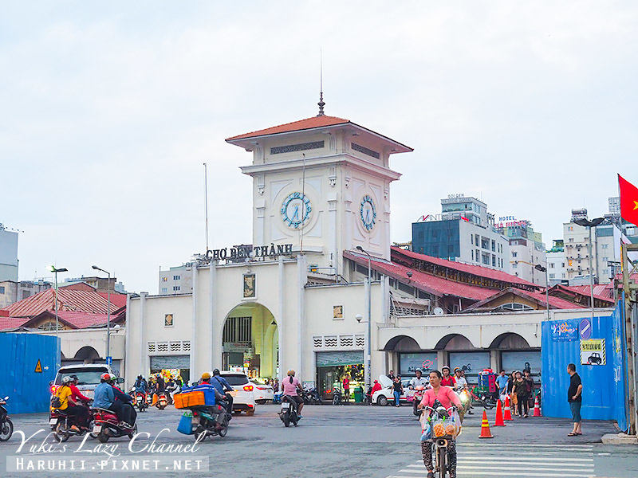
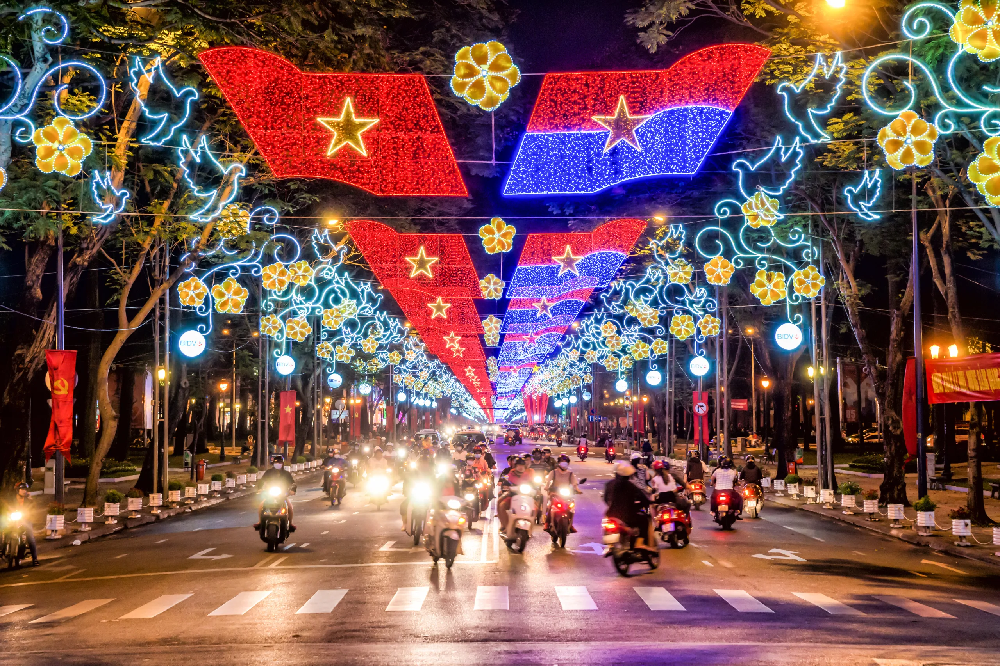
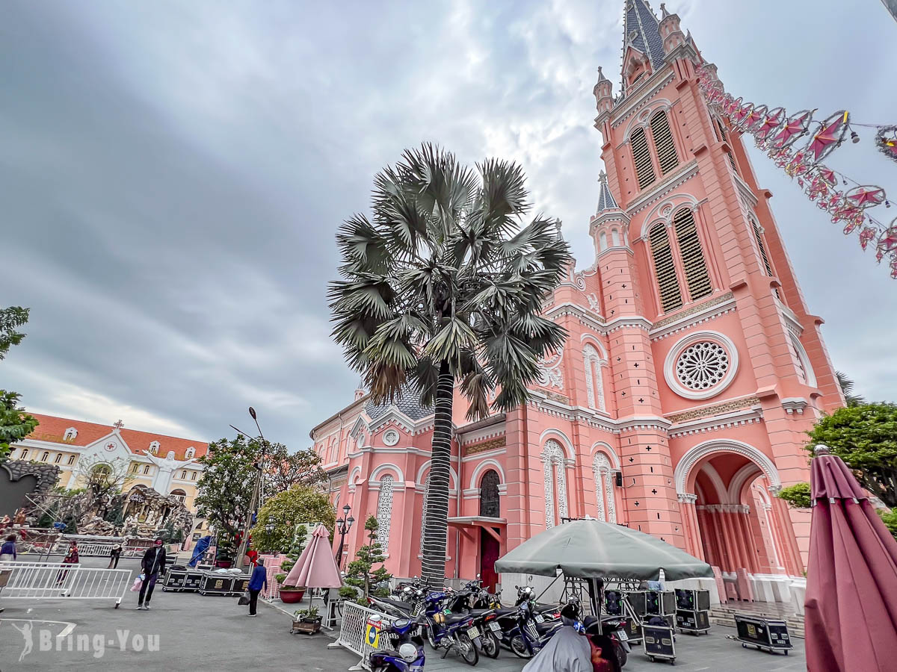

關於胡志明市

胡志明市（Ho Chi Minh City）是越南最大的城市，也是越南的經濟與文化中心。 這裡融合了法式殖民建築、現代摩天大樓、熱鬧夜市、特色咖啡文化與豐富的越南美食。 無論是歷史探索、美食體驗還是城市觀光，都能感受到西貢獨特的魅力。
胡志明市（Ho Chi Minh City）是越南最大的城市，也是越南的經濟與文化中心。 這裡融合了法式殖民建築、現代摩天大樓、熱鬧夜市、特色咖啡文化與豐富的越南美食。 無論是歷史探索、美食體驗還是城市觀光，都能感受到西貢獨特的魅力。

胡志明市最著名的法式紅磚教堂地標。
建於1880年，是胡志明市最具代表性的建築之一， 紅磚由法國運來，充滿歐洲風格。

百年歷史建築，展現濃厚法國殖民風格。
由法國建築師設計， 內部保留古典歐洲風格， 至今仍可寄明信片。

體驗越南文化與購買伴手禮的熱門景點。
市場內販售咖啡、腰果、紀念品與越南小吃， 是旅客必逛地點之一。
越南歷史的重要見證地。
曾是南越總統府所在地， 是戰爭歷史的重要象徵。
了解越南歷史的重要場所。
展示越南戰爭相關文物， 讓人了解歷史背景。

胡志明市最熱鬧的街道之一。
夜晚有燈光與表演， 是當地人氣散步區。
欣賞城市夜景與河岸風光。
搭船遊西貢河， 可以看到整個城市夜景。

越南最具代表性的國民美食。
湯頭用牛骨長時間熬煮， 香氣濃郁，是越南早餐代表。

結合法式與越式風味的經典小吃。
外酥內軟，搭配肉類與蔬菜， 是越南街頭最常見美食之一。

體驗越南獨特咖啡文化。
使用滴漏壺慢慢沖泡， 味道濃厚且帶甜味。

清爽健康的越南特色料理。
以米紙包裹蝦子、蔬菜， 口感清爽不油膩。
可以看到胡志明市現代化城市景觀，高樓與河岸交錯。
法國殖民時期建築，保留歐式拱門與復古設計。

胡志明市知名打卡景點，以粉紅色外觀聞名。
📍 城市：胡志明市（Ho Chi Minh City）
🌤 最佳旅遊時間：12月至4月
✈ 國際機場：新山一國際機場
💰 貨幣：越南盾（VND）